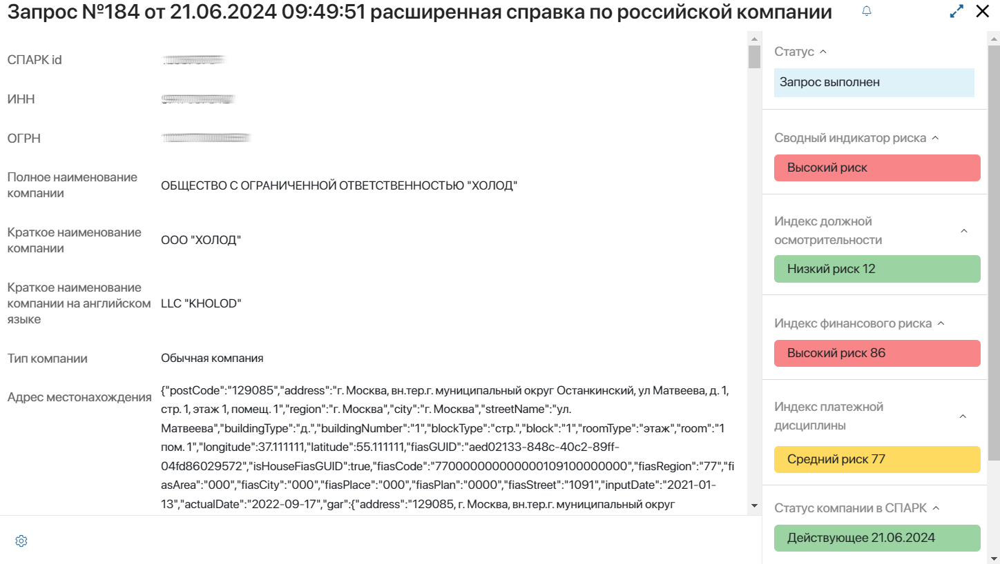
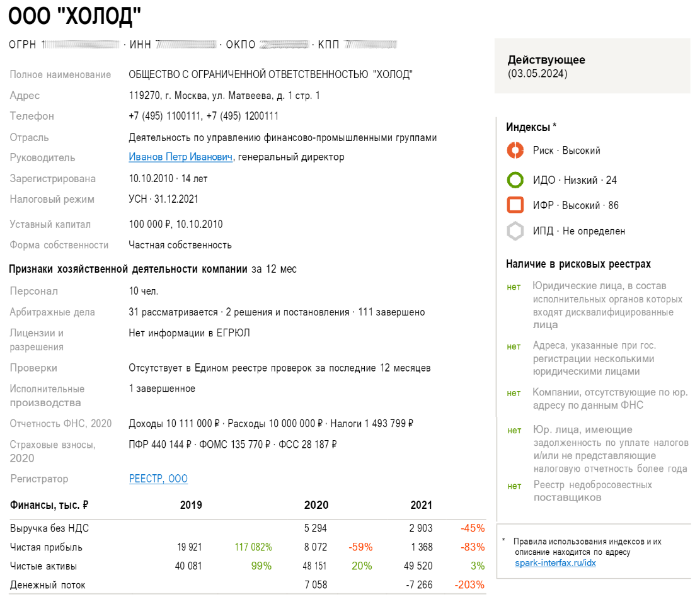
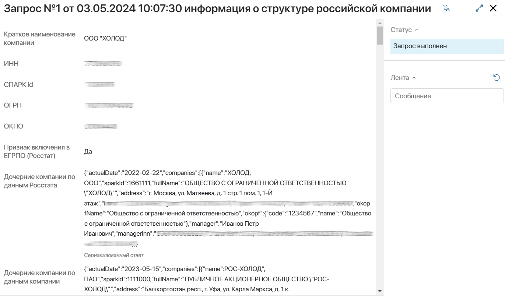

Интеграция с сервисом СПАРК позволяет получать различную информацию по компании или физическому лицу, подписываться на изменения с помощью опции мониторинга и загружать данные в ELMA365.
Это можно сделать:
- вручную — со страницы приложения в разделе СПАРК. Каждому типу запроса соответствует своё приложение, в котором пользователь создаёт элемент. Затем запускается преднастроенный процесс со специальным блоком, в котором выполняется запрос в сервис. После обработки запроса данные отображаются в карточке элемента. Таким образом пользователь единовременно получает данные только по одному созданному запросу. Подробнее об этом читайте в статье «Отправка запросов в сервис из раздела „СПАРК”»;
- автоматически — с помощью специальных блоков решения моделируется пользовательский бизнес-процесс. В его ходе можно запустить обработку нескольких запросов в сервис. Для каждого из них добавится элемент приложения в разделе СПАРК. Полученные данные можно отобразить в карточке элемента любого приложения. Например, вы можете настроить процесс создания компании и сбора информации о её индексах риска. По окончании процесса информации добавится в карточку компании. Подробнее читайте в статье «Моделирование процесса с блоками решения „Интеграция СПАРК“».
Приложения раздела СПАРК для создания запросов
Приложение в разделе СПАРК |
Метод получения данных из СПАРК |
Графический блок бизнес‑процесса |
Расширенная справка по российской компании |
GetCompanyExtendedReport |
Расширенная справка по российской компании |
Отчет “СПАРК-Риски” по российской компании PDF |
GetCompanySparkRisksReport |
Получение данных из СПАРК: Отчет СПАРК-Риски по российской компании PDF |
Информация о структуре российской компании |
GetCompanyStructure |
Получение данных из СПАРК: Структура российской компании |
Информация об актуальных совладельцах российской компании |
GetCompanyCoowners |
Получение информации об актуальных совладельцах российской компании |
Получение исторических данных о дочерних компаниях |
GetCompanySubsidiariesHistory |
Получение исторических данных о дочерних компаниях |
Получение данных по остатку платных запросов |
GetStateAccount — для получения сводной информации о вызовах пользователем методов API СПАРК, которые учитываются в общем лимите запросов. Услуги подключения подписки API СПАРК приобретаются отдельно. |
Получение данных по остатку платных запросов |
Получение данных из СПАРК |
Приложение позволяет создать запрос с использованием любого доступного метода для получения данных из сервиса. Также в ходе процесса можно применить соответствующий блок и отправлять каждый раз запросы с разными методами. |
Получение данных из СПАРК |
Бывшие совладельцы компании |
GetCompanyCoownersHistory |
Получение списка бывших совладельцев компании |
Получение данных по санкционным рискам ПДЛ |
GetPersonComplianceReport |
Получение данных по санкционным рискам ПДЛ (публичного должностного лица) |
Санкционные риски компании |
GetCompanySanctionList |
Получение информации о вхождении компании в санкционные списки, а также список санкций по Правилу 50% |
Санкционные риски физического лица |
GetPersonSanctionList |
Получение информации о вхождении физического лица в санкционные списки и списки наблюдения |
Информация о факторах риска российской компании |
GetCompanyRiskFactors |
Получение информации о факторах риска российской компании |
Факторы риска физического лица |
GetPersonSparkRisksReport |
Получение информации о факторах риска по физическому лицу |
Справки по ИП |
GetEntrepreneurReport |
Получение данных о Справке по ИП |
Включение мониторинга по компании |
MonActivate |
Включение мониторинга по компании |
Выключение мониторинга по компании |
MonDisable |
Выключение мониторинга по компании |
Получение списка событий мониторинга по компаниям |
MonGetEventsList |
Получение списка событий мониторинга по компаниям |
Получение списка событий мониторинга по компании |
MonGetCompanyEvents |
Получение списка событий мониторинга по компании |
Рассмотрим на примерах, какие данные можно получить через запросы в СПАРК.
Расширенная справка по российской компании
Расширенная справка содержит всю информацию по компании, собранную в сервисе СПАРК. Вы можете получить:
- полные реквизиты;
- адреса и контактные данные;
- информацию о руководителе и численности персонала;
- данные об изменениях в наименовании, размере уставного капитала и т. д.;
- текущий статус компании и индексы риска.
Карточка запроса, отправленного вручную, выглядит следующим образом:

Индексы риска сервиса СПАРК
Показатели индексов риска СПАРК предоставляют экспресс-оценку финансовых рисков, связанных с компанией-контрагентом. Вы сможете выявить потенциальные проблемы и принять решение о дальнейшем сотрудничестве.
В решении доступна возможность наглядно отобразить индексы риска в виджетах с указанием значения и цветовым индикатором: зелёный, жёлтый, красный.
По умолчанию виджеты добавлены на форму приложения Расширенная справка по российской компании. Их можно разместить в карточке другого приложения системы, например, компании. Подробнее об этом читайте в статье «Виджеты решения «Интеграция СПАРК» и их настройка».
В сервисе СПАРК выделяют следующие индексы риска:
- Сводный индикатор риска — совокупная оценка надёжности компании, рассчитываемая на основании публично доступной информации о деятельности юридического лица. Вычисляется в трёх значениях: Низкий (зелёный), Средний (жёлтый), Высокий (красный);
- Индекс должной осмотрительности (ИДО) — анализ компании, выявляющий вероятность её незаконной деятельности. Представляет собой значение от 1 до 99. Более высокое значение отражает большую вероятность рисков при взаимодействии с компанией и обозначается красным индикатором;
- Индекс финансового риска (ИФР) — оценка вероятности неплатёжеспособности компании. Результат обозначается цифрой от 1 до 99. Чем выше значение, тем больше вероятность неудовлетворительного финансового состояния компании. Высокий риск отмечается красным цветом;
- Индекс платежной дисциплины (ИПД) — показатель, учитывающий своевременность внесения оплат по выставленным компании счетам. Показывается в виде числа от 0 до 100. Более низкое значение указывает на высокий риск просрочки платежей и отображается в виде красного индикатора.
Подробную информацию об индексах риска можно найти на официальном сайте сервиса СПАРК.
Отчет «СПАРК-Риски»
Сервис СПАРК формирует профиль компании и сохраняет данные в отчёте СПАРК-Риски.
Отчёт содержит агрегированную оценку благонадёжности компании, выраженную в значениях индексов риска, ключевые финансовые показатели и подробное описание признаков её хозяйственной деятельности.
С помощью интеграции можно загрузить эту информацию в ELMA365 и отобразить в файле формата .pdf. Отчёт выглядит следующим образом:

Подробнее о возможностях отчетов СПАРК читайте на официальном сайте сервиса СПАРК.
Информация о структуре российской компании
Структура компании загружается из сервиса СПАРК и содержит данные о совладельцах, перечень филиалов и дочерних компаний с их реквизитами. Также отмечается участие компании в фондах, холдингах, некоммерческих партнёрствах и объединениях.
Информация из СПАРК поступает в виде строчного сериализованного ответа и в карточке запроса выглядит следующим образом:

Информация об актуальных совладельцах российской компании
Из СПАРК загружаются актуальные данные о собственниках компании, включая иностранных бенефициаров, список совладельцев, история изменений в иерархии владения, а также признаки и основания ограничения доступа к информации о совладельцах.
В карточке созданного запроса в разделе СПАРК информация о совладельцах отображается в виде строчного сериализованного ответа.
Подробнее о возможности проанализировать структуру компании и информацию о совладельцах читайте на официальном сайте сервиса СПАРК.
Получение данных из СПАРК
Запрос, созданный в приложении СПАРК > Получение данных из СПАРК является универсальным, т. к. позволяет получить данные по любому из доступных запросов в сервис. Для этого в карточке запроса указывается соответствующий метод СПАРК и его входные параметры.
Полученные данные отобразятся в элементе приложения Получение данных из СПАРК как строчный сериализованный ответ в поле Результат выполнения.
Информация о факторах риска физического лица
Из сервиса СПАРК загружаются актуальные данные о физическом лице, включая Ф. И. О., дату и место рождения, дату потери правоспособности.
В карточке созданного запроса в виде строчных сериализованных ответов отобразится следующая информация: факторы риска, наличие связанных ИП, дисквалификации данные о физическом лице как индивидуальном предпринимателе, руководителе, совладельце и бенефициаре.
Мониторинг изменений по компании
В сервисе СПАРК существует опция Мониторинг изменений, которая обеспечивает своевременное отслеживание существенных событий компании и сведений о ней. Мониторинг включается для каждой компании и помогает отреагировать на действия контрагента, а также узнать о планах по реорганизации или ликвидации раньше, чем информация появится в Едином государственном реестре юридических лиц.
В ELMA365 вы можете управлять опцией мониторинга, а также загружать данные обо всех изменениях компании: о смене собственника, банкротстве, включении в специализированные реестры и т. д. Запрашиваются события по компании, произошедшие за последние 15 дней, но не ранее даты подписки на компанию в СПАРК.
В сервис СПАРК можно направить следующие запросы:
- Включение мониторинга по компании — активировать подписку на компанию и получить возможность отслеживания изменений по ней;
- Получение списка событий мониторинга по компании — получить информацию об изменениях в определённой компании по её реквизитам, названию или ID в СПАРК;
- Получение списка событий мониторинга по компаниям — получить информацию об изменениях во всех компаниях, на которые вы подписаны в сервисе СПАРК;
- Выключение мониторинга по компании — отменить подписку на изменения определённой компании.
Подробнее о мониторинге изменений читайте на официальном сайте сервиса СПАРК.